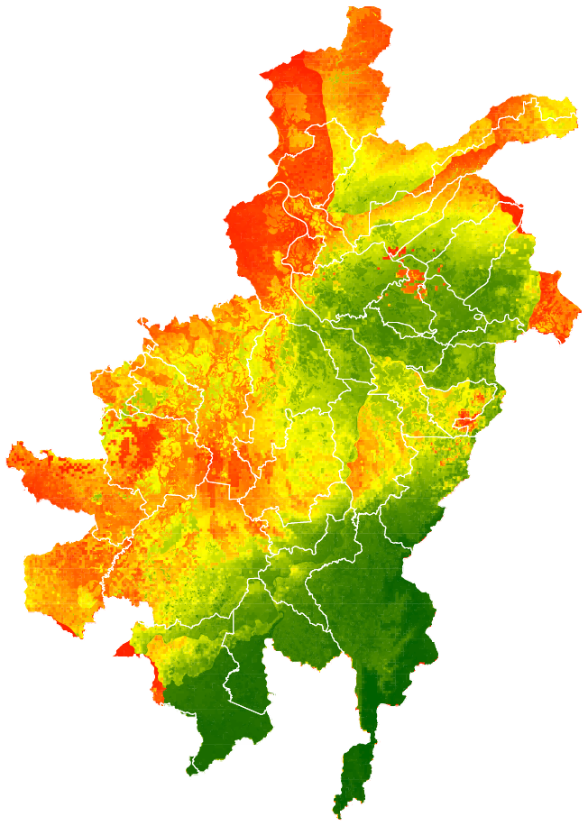
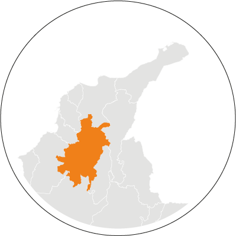
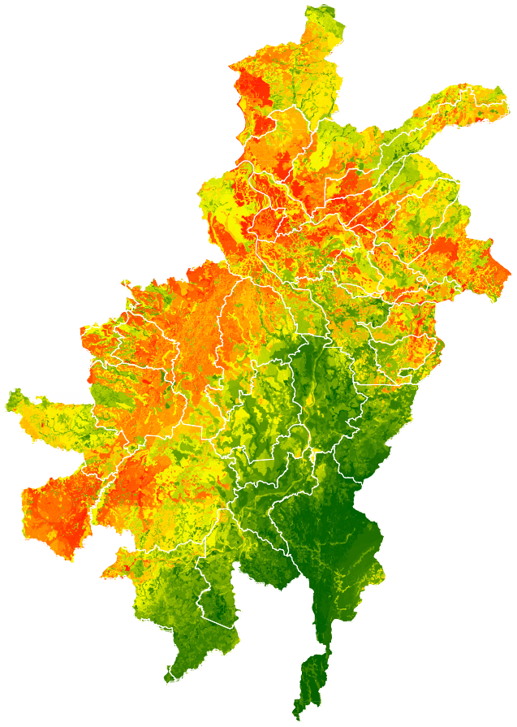
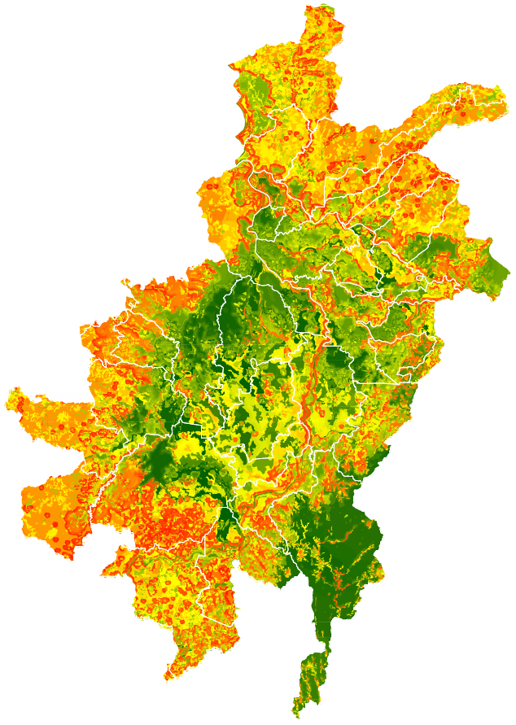
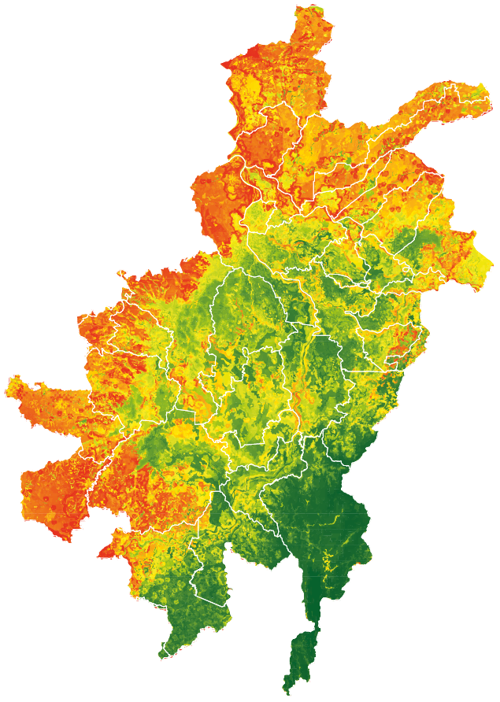

Este principio incluye variables como riqueza de especies, endemismos, especies amenazadas, remanentes por ecosistemas y ecosistemas amenazados. Se destaca la importancia de la zona suroriental cerca a la serranía de San Lucas.


Este principio incluye variables de conectividad y modelos de fragmentación de coberturas. Las áreas en verde aún mantienen un bajo estado de fragmentación. destacando zonas con presencia de agua.

Este principio incluye modelos de oferta y regulación hídrica, carbono en biomasa y suelo y fertilidad del suelo. Este insumo es clave para evidenciar la pérdida de servicios ecosistémicos.

Se unifican los principios 1, 2 y 3 para reconocer las zonas de mayor integridad del paisaje e identificar núcleos de áreas preservadas clave para la definición de la red ecológica. Acá se destacan las áreas con presencia de agua como zonas de gran importancia.